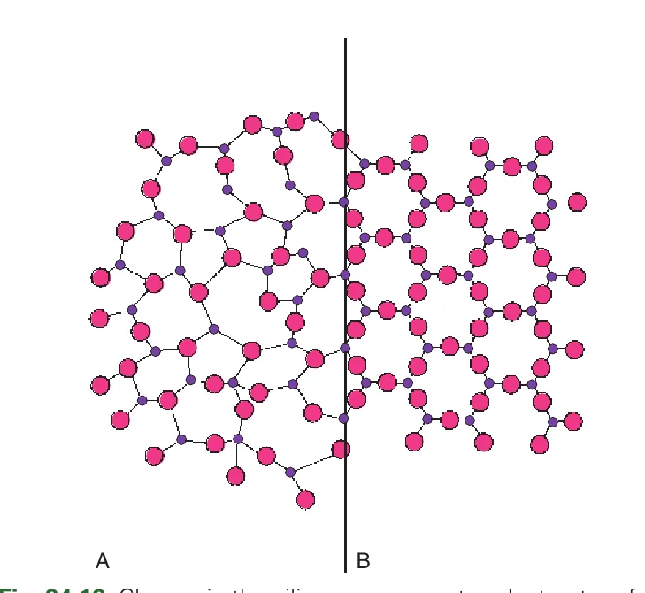

نسخه استخراجشده؛ ترجمه یا تأیید علمی انجام نشده است. وضعیت: captured
سه دستهبندی دمایی سرامیک دندانی: «پرذوب (۱۲۹۰ تا ۱۳۷۰ درجه)، متوسطذوب (۱۰۹۰ تا ۱۲۶۰ درجه)، و کمذوب (۸۷۰ تا ۱۰۷۰ درجه).» و جایگاه متالسرامیک: «برخلاف دندانهای مصنوعی و روکشهای ژاکت پرسلنی اصلی که در بازههای متوسط و پرذوب پخته میشوند، ترمیمهای ونیر متالسرامیک در بازهی ۹۵۰ تا ۱۰۲۰ درجه پخته میشوند.»
و ترکیب پایه: «پرسلن دندانی از ترکیبی از کوارتز (SiO₂)، فلدسپار (ارتوکلاز آلومینوسیلیکات پتاسیم، آلبیت آلومینوسیلیکات سدیم)، و سایر اکسیدها تولید میشود.»
و فرایند فریتسازی: «حین ساخت، مواد تا دمای بالا گرم میشوند تا تودهای شیشهای تشکیل شود، سپس با فرو بردن در آب بهسرعت سرد میشوند، که باعث میشود تودهی شیشهای به قطعات کوچک بسیار بشکند. محصول حاصل فریت نامیده میشود.» و ادامه: «این فرایند ممکن است چند بار تکرار شود، سپس فریت بالمیل میشود تا توزیع اندازهی ذرات مطلوب به دست آید.»
و چرا این مهم است: «چون فریتسازی در دماهای بسیار بالاتر از دماهای ساخت ترمیمهای دندانی رخ میدهد، بیشتر واکنشهای شیمیایی میان مواد خام پیش از استفاده در آزمایشگاه رخ میدهند.»
و ترکیب دو فریت — کلید حل دو مشکل: بیشتر فرمولاسیونهای متالسرامیک «از مخلوطی از دو فریت تشکیل شدهاند: یک فریت شیشهای کمذوب و یک فریت با انبساط بالا متشکل از لوسیت بلورین (KAlSi₂O₆) با تقارن تتراگونال.» و این مخلوط «بر دو دشواری اصلی ونیر کردن فلز با سرامیک غلبه میکند: داشتن دمای پخت پرسلن خوب زیر بازهی ذوب فلز، و داشتن انبساط حرارتی بهقدر کافی بالا و سازگار با فلز».
و ساختار پس از پخت: «سرامیکهای دندانی از حدود ۲۰ درصد حجمی بلورهای لوسیت تتراگونال پراکنده در یک ماتریس شیشهای تشکیل شدهاند.» و ساختار ماتریس: «یک شبکهی تصادفی سیلیکون-اکسیژن؛ اتم سیلیکون با چهار اتم اکسیژن در پیکربندی چهاروجهی ترکیب میشود» و این چهاروجهیها «میتوانند در زنجیرهای با پیوندهای کووالانسی و یونی به هم متصل شوند، که به ساختاری شبهپایدار میانجامد».
و نقش اصلاحکنندههای شیشه — با دو پیامد مطلوب: «چنین شبکهی سیلیکون-اکسیژنی نقطهی ذوب بسیار بالایی میداشت. معمولاً پتاسیم و سدیم به ترکیب شیشه افزوده میشوند تا به شکستن شبکهی سیلیکون-اکسیژن کمک کنند و بنابراین اصلاحکنندههای شیشه نامیده میشوند» — و در سرامیک دندانی «پتاسیم و سدیم در آغاز توسط فلدسپارها فراهم میشوند». و دو پیامد: «(۱) دمای نرم شدن شیشه کاهش مییابد، و (۲) ضریب انبساط حرارتی افزایش مییابد.»
و کار سازنده: «سازنده محتوای اکسید را طوری تنظیم میکند که ضریب انبساط حرارتی سرامیک دندانی به مقدار متناظر آلیاژهای زیرساخت نزدیک باشد.»
و خطر دویتریفیکاسیون: «اگر ترکیب شیشه بهدرستی تنظیم نشود، شکست و بازسازماندهی گستردهی شبکهی سیلیکون-اکسیژن ممکن است رخ دهد، که به تبلور شیشه — که دویتریفیکاسیون هم نامیده میشود — میانجامد.» و علت بالینیاش: «مقداری دویتریفیکاسیون ممکن است در سرامیکهای دندانی رخ دهد اگر ترمیم سرامیکی دفعات زیادی پخته شود، و معمولاً با افزایش ضریب انبساط حرارتی و کدری همراه است.»

کندنساسیون و هدفش: «پرسلن معمولاً بهصورت پودر دریافت و با آب یا مایع حاوی گلیسیرین پایهآبی مخلوط میشود تا خمیری با قوام کارپذیر بسازد.» و روشها: «چند تکنیک کندنساسیون — مانند ارتعاش و بلاتینگ — برای برداشتن هرچه بیشتر آب اضافی به کار میروند.»
و سازوکار و هدفش: «ذرات پرسلن حین کندنساسیون با عمل مویینگی به هم کشیده میشوند. کندنساسیون درست، تولید بخار را حین فاز خشک شدن پخت به حداقل میرساند.»
و اکسیدهای اپککننده — سازوکار نوریشان: «چگالی این اکسیدها بیشتر از ماتریس شیشه است. در نتیجه، اکسیدهای قلع، تیتانیوم و زیرکونیوم ضریب شکست بالاتری از اجزای ماتریس شیشه، یعنی فلدسپار و کوارتز، دارند.»
و شرط کارکردشان: «وقتی بازهی مشخصی از اندازهی ذرات اکسید به کار رود، بیشتر نور فرودی پراکنده و بازتاب میشود بهجای آنکه از پرسلن عبور کند، و بدین ترتیب رنگ زیرلایهی آلیاژ را بهطور مؤثری میپوشاند.»
و شواهد میکروسکوپی: در نقشهبرداری عنصری فصل مشترک آلیاژ-پرسلن، «غلظتهای آلومینیوم و تیتانیوم قابل شناساییاند» که نشان میدهد «ذرات اکسید مجزای آلومینیوم و تیتانیوم در پرسلن اپک، احتمالاً درست زیر سطح» قرار دارند.
و پرسلن بادی: «روی لایهی اپک پخته میشود، معمولاً همراه با پرسلن انسیزال. مقداری شفافیت فراهم میکند و حاوی اکسیدهای فلزی است که به تطابق رنگ کمک میکنند.»
و یک هشدار مهم دربارهی رنگ: «هرچند پرسلنهای سازندگان مختلف نام رنگی یکسانی میگیرند — مثلاً راهنمای کلاسیک VITA — تنوع رنگی معناداری میان سازندگان وجود دارد، و دندانپزشک باید بداند تکنسین از کدام سیستم استفاده میکند.»
و یک نکتهی سازمانی: «بیشتر سازندگان پرسلن، یک رنگ اپک برای هر رنگ بادی فراهم میکنند.»